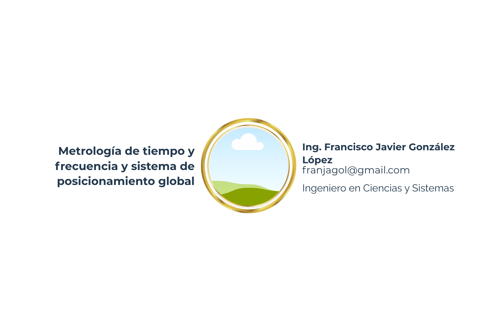

5 Metrología de tiempo y frecuencia y sistema de posicionamiento global

5.1 Introducción
El segundo (s) es la unidad básica de tiempo del Sistema Internacional de Unidades (SI) y se define como la duración de 9.192.631.770 períodos de la radiación correspondiente a la transición entre dos niveles hiperfinos del estado fundamental del átomo de cesio-133.
Si se usaran 3 relojes, no sincronizados y de precisión distinta, ubicados en países diferentes para medir un intervalo de tiempo de 60 minutos, por ejemplo, todos deberían medir lo mismo. O, casi lo mismo, puesto que lo más seguro es que los tres marquen tiempos diferentes. Pero la diferencia no debería ser “muy grande”. Pensemos que los valores indicados por los tres se comparan con el valor convencionalmente verdadero dado por un reloj patrón, que indica un tiempo de 60.00000000000 minutos (sesenta minutos). Uno de ellos indica un tiempo de 60.0002871 minutos, el segundo indica 60.0072343 minutos y el tercero, 59.71322 minutos. Probablemente, las diferencias de todos los relojes con respecto al patrón, por convenio entre partes, sean aceptadas; por ejemplo si el concepto lo aplicamos a contadores de energía eléctrica en los que se aceptan precisiones de ±0.2% o ±0.5%. Los errores del primero y el segundo con respecto al patrón son 0.0004785% y 0.01206%, respectivamente. El último mide 0.478% menos que el patrón de referencia. Para muchos asuntos que nos interesan, la diferencia del último reloj puede que no tenga importancia, pero qué tal si consideramos que es un factor que afecta la medición de un bloque de energía en kWh, equivalente a una potencia constante de 100 MW, que una entidad le compra a otra a Q.1.51 cada kWh, durante un año. De conformidad con los datos anteriores, la energía eléctrica durante 1 día es de 2\(2.4 \times 10^{6}\) kWh (2.4 millones de kilovatios hora). Su costo: Q 3,624,000.00. Sin embargo, debido al error de tiempo, el vendedor perdería Q.6,322,351.88 al año. Y alguien, vinculado a la actividad de compraventa de energía eléctrica, podría trivializar la pérdida diciendo que cuando el vendedor actual compre la misma cantidad, la pérdida estará compensada. Esta especie de trueque aparentemente desvanece el efecto del error del reloj. Pero acaso ¿no hay que pagar justamente por lo justo?
Para alcanzar la justicia en las transacciones comerciales, cualquier magnitud que se mida se debe medir correctamente, con la más alta exactitud práctica posible, con conocimiento de las partes que intervienen en la transacción. Aparte de la necesidad de medir con alta exactitud el tiempo para lograr justicia en las transacciones comerciales, los sistemas de navegación marítima, espacial y terrestre (waze por ejemplo), los sistemas digitales, la automatización de sistemas eléctricos de potencia e industriales, o las telecomunicaciones modernas requieren de medición de tiempo y frecuencia con alta exactitud y alta resolución; especialmente en los sistemas eléctricos de potencia en los cuales los fenómenos se propagan a casi la velocidad de la luz y nos interesan respuestas de mili, micro o nanosegundos.
Además, la definición de otras unidades básicas del sistema internacional de unidades como el amperio, el kilogramo, el mol, la candela, el metro y el kelvin dependen de la definición del segundo. El mol, es la unidad básica de medida de sustancia del SI, y se relaciona con la cantidad de partículas elementales como átomos de carbono hay en 0.012 kg de carbono-12. La candela, unidad básica de la intensidad luminosa, también se define en términos de una frecuencia. El metro se define como la distancia que recorre la luz en el vacío durante un intervalo de tiempo de 1/299792458 de segundo. Esto define la importancia del segundo en la vida cotidiana, en la ingeniería, en la ciencia y en la tecnología.
A la fecha, el reloj más exacto en el mundo es el reloj atómico de cesio (actualmente de fuente de cesio). ¿Por qué? Porque la frecuencia de resonancia de este reloj es la misma en Guatemala que en Japón o en cualquier Galaxia, y es la misma hoy que la del futuro o la de hace millones de años. Por eso, el reloj atómico de cesio es el que funciona como patrón de la mayoría de los países del mundo. Incluso, las grandes empresas de telecomunicaciones poseen su propio reloj de cesio, con el fin de optimizar el tráfico de datos entre sus abonados
5.2 Artículo
Definición del segundo
El segundo es la unidad básica de medida del tiempo. Sin embargo, ha habido un desarrollo histórico para llegar a su actual definición y realización física. Hacia el año 1500 a.C. los egipcios que utilizaban un sistema de numeración de base 12 y basándose en la observación de las estrellas dividían la noche en 12 horas y durante el día las 12 horas las contaban usando relojes de sol. De hecho, el reloj más antiguo es el reloj de sol en el Valle de los Reyes de Egipto. Por su lado, los antiguos babilonios hacia el año 2000 a.C. utilizaban un sistema de numeración sexagesimal (base 60 a diferencia de nosotros con el sistema decimal de base 10) heredado de los sumerios que lo utilizaron desde aproximadamente el año 3500 a.C. Por eso, cada hora se dividió en 60 partes llamadas minutos y cada minuto en 60 partes llamadas segundos. Por supuesto, estos eran intervalos de tiempo que no tenían un valor constante. Sin embargo, fueron de uso común durante muchos siglos después. Hacia el siglo 6 a.C., los griegos inventaron el reloj de sol portátil. Después, los romanos mejoraron los relojes de sol utilizando materiales como mármol y bronce para construir relojes de sol más duraderos y precisos.
Durante la Edad Media cayeron en desuso los relojes de sol en Europa debido a la invención de los relojes mecánicos. Con el advenimiento de estos, por primera vez las horas se convirtieron en intervalos de tiempo constantes, con la misma duración independientemente del día o la estación del año. Cerca del siglo XV d.C. científicos como Johannes Kepler y Galileo Galilei, con su contribución en astronomía, ayudaron a mejorar los relojes de sol en cuanto a precisión y diseño; pero con el paso de los años, el reloj de sol fue quedando relegado por la presencia de los relojes mecánicos. Luego del siglo XV el desarrollo de la unidad de medida del tiempo se enfocó en la mejora de la precisión de los relojes mecánicos y la estandarización de unidades como el segundo.
En la década de 1840 a 1850, varios sistemas de “tiempos locales”, de ciertos países o regiones, fueron reemplazados con el establecimiento del Patrón de Greenwich para Inglaterra, Escocia y Gales. El observatorio Real de Greenwich fue fundamental en el desarrollo de la navegación marina basada en el mantenimiento “exacto” del tiempo. Subsecuentemente, el Tiempo Medio de Greenwich (Greenwich Mean Time, GMT) fue oficialmente reconocido como el tiempo de referencia para el mundo y sirvió para tal propósito no más allá de 1972. Entre 1750 y 1890 el segundo fue definido como una fracción de un día solar medio, siendo igual 1/(24 x 60 x60) = 1/86400 de un día solar medio. Sin embargo, para lograr una mejor exactitud, en 1956 el segundo se redefinió como la fracción 1/31.556.925,9747 del año solar medio, basándose en el movimiento orbital de la Tierra. Cada año se dividió en 365.2422 días, cada día en 24 horas, cada hora en 60 minutos y cada minuto en 60 partes, cada una de ellas denominada segundo.
Con el advenimiento de relojes atómicos de altísima exactitud, científicos y tecnólogos reconocieron lo inadecuado de mantener el tiempo basándose en el movimiento de la tierra, el cual fluctúa en razón de unas pocas milésimas de segundo por día. Eso se debe a que los átomos se comportan de manera más precisa que la rotación de la Tierra, que no es perfectamente uniforme. De hecho, los científicos han observado que durante millones de años la Tierra ha ido rotando más despacio, pero en los últimos 50 años la tierra ha estado girando más rápido. Es así como en 1967 se redefine el segundo en términos de la radiación electromagnética emitida por un átomo de cesio cuando es excitado con microondas.
En el reloj atómico de cesio133 para la realización física del segundo los átomos son impulsados por medio de láseres en un trayecto vertical y en su trayecto son sometidos a radiación con microondas haciéndolos entrar en resonancia, lo que los hace emitir una radiación electromagnética con una frecuencia constante de 9,192,631,770 Hz. Se cuentan los ciclos que corresponden a esa frecuencia y el tiempo transcurrido en el conteo equivale a 1 s. Aunque el principio científico en la definición teórica del segundo es sencillo, su realización física no es tan fácil.
La redefinición del segundo en 1967 proveyó una excelente referencia para mediciones más exactas de intervalos de tiempo y el 1 de enero de 1972 se estableció en el ámbito internacional una nueva escala de tiempo denominada Tiempo Coordinado Universal UTC (por sus siglas en inglés), quedando la hora GMT en desuso, aunque de forma un tanto coloquial se sigue utilizando. El tiempo, determinado por los relojes atómicos –localizados en más de 80 laboratorios nacionales de más de 25 países en el mundo entero- recibe el nombre de Tiempo Atómico Internacional TAI y es el tiempo de referencia internacional establecido por el BIPM (Buró Internacional de Pesas y Medidas, con sede en París, Francia).
Pareciera que ya no se puede más, que se ha llegado a la definición definitiva del segundo; pero la gente experta en el tema formula cuestiones como la siguiente: ¿Crees saber qué es un segundo? Y advierte: Probablemente eso cambie en la próxima década.
Relojes
El reloj es el dispositivo que se utiliza para medir el tiempo, siendo el primer reloj que la humanidad usó, el ya desaparecido reloj de sol. Cualquier reloj mecánico, digital o atómico se basa en el conteo de oscilaciones periódicas para lograr su objetivo. Entre mayor sea el número de oscilaciones observado que, en el tiempo se mantenga estable, con mayor precisión se medirá el tiempo. El establecimiento y mantenimiento del segundo como unidad básica de tiempo se basa, precisamente, en el conteo de un número fijo de oscilaciones periódicas. Antes de la revolución industrial los relojes mecánicos que prevalecían eran los de péndulo de pie, considerados buenos para esa época, pues solo se atrasaban 15 segundos al día. Los relojes mecánicos suizos han funcionado con desviaciones de ±4 s por día, y ±2 s por día los más precisos, debido a lo cual han estado en el mercado relojes mecánicos suizos extremadamente caros.
Sin embargo, con los avances en mecánica cuántica y el descubrimiento del transistor aparecen los relojes atómicos y los relojes electrónicos, siendo los primeros con los que se ha alcanzado la más alta precisión y la resolución más alta por lo que se van a convertir en los patrones primarios e internacionales del tiempo y los otros diseminarán el segundo a través de relojes portátiles, computadoras, teléfonos digitales, dispositivos de protección, redes de comunicaciones electrónicas y otros equipos electrónicos del mundo entero. Los relojes electrónicos son de dos tipos: de cuarzo y circuito electrónico oscilador como el integrado 555. Los de cuarzo se utilizan en equipos electrónicos en los que se requiere más precisión como las computadoras, los plc o los relés de protección. Luego, el reloj 555 se utiliza para equipos electrónicos que requieren menos precisión como el control de luz de una lámpara led y de motores o sistemas de modulación por ancho de pulso.
Es así como los relojes de cuarzo, de alta fiabilidad, reducido tamaño y bajo consumo energético, debutan en el mundo de medición del tiempo con desviaciones de segundos; pero no en días sino en años; siendo los relojes portátiles más precisos del mercado. Un cristal de cuarzo, al ser excitado con electricidad mediante un circuito electrónico, oscila o vibra a una frecuencia precisa de 32,768 veces por segundo; el circuito cuenta las vibraciones y genera pulsos eléctricos regulares, uno por segundo que alimentan una pantalla LCD o accionan un pequeño motor eléctrico que mueve engranajes que, a su vez, hacen girar las agujas de las horas, los segundos y los minutos del reloj. Los relojes de cuarzo han demostrado ser mucho más precisos que los mejores inventos mecánicos. Si hay necesidad de hacerle algún ajuste a un reloj de cuarzo será cuestión de años no de horas, como ocurría u ocurre con los relojes mecánicos. El reloj interno de cada computadora o de cada relé de protección o de cada teléfono celular es un reloj de cuarzo. Es mediante relojes portátiles que el segundo, como unidad básica de medición del tiempo, se disemina en el mundo y todas las actividades de los seres humanos, y actualmente de los equipos automáticos y autómatas; se realizan de manera coordinada con base en el sistema de Tiempo Atómico Internacional TAI que suministra como referencia el segundo realizado en un reloj atómico, es decir la hora internacional. Tales relojes atómicos se enumeran a continuación de conformidad con su desarrollo histórico:
1940: Isaac Rabi midió la frecuencia de resonancia de un átomo de cesio: 9.1914 MHz, siendo este el punto de partida para la idea de la construcción del primer reloj atómico.
1955: Louis Essen: midió la frecuencia de un átomo de cesio de 9.192.631.770 MHz; con incertidumbre de 20 partes por billón -ppb-.
1959: Estados Unidos con su NBS-2, Suiza, Alemania, Canadá y Japón construyen sus primeros relojes atómicos de cesio, con 10 ppb: sin adelanto ni atraso de un segundo en 3000 años.
1966: Estados Unidos construye su reloj atómico de cesio NBS-3 que no se adelanta ni se atrasa ni un segundo en 30 000 años.
1967: la Conferencia General de Pesas y Medidas -CGPM- redefinió del segundo con la frecuencia de Essen de 9.192.631.770 MHz.
1975: Estados Unidos construye el reloj atómico de cesio NBS-6 que no se adelanta ni se atrasa ni un segundo en 400 000 años.
1993: Estados Unidos construye el reloj atómico de cesio NIST-7, sin adelanto ni atraso de un segundo en 6 millones de años.
2014: Estados Unidos construye el NIST-F2, reloj de fuente criogénica, sin adelantarse ni atrasarse 1segundo en 300 millones de años.
2006: Estados Unidos construye el reloj óptico de luz visible de ion de mercurio en el NIST que utiliza peine de frecuencia para convertir la luz visible en microondas y poder medir su frecuencia con mayor precisión que el reloj atómico de cesio.
2010: Estados Unidos construye el reloj lógico cuántico de ion de aluminio del NIST, que utiliza peine de frecuencia para convertir la luz visible en microondas y poder medir su frecuencia, sin adelanto ni atraso de 1 segundo en 3,000 millones de años. Desde entonces han mejorado la calidad de los relojes que no se atrasan ni adelantan en 1 segundo en más de 15,000 millones de años. (el Bing bang ocurrió hace 13,800 millones de años); por lo que si un reloj de estos se hubiese puesto a funcionar en el instante en que se dio el Bing bang y hubiese durado todo ese tiempo, a la fecha no se habría atrasado ni un solo segundo.
2024: Estados Unidos construye el reloj de red óptica de estroncio del NIST. Sin adelanto ni atraso de 1 segundo en 30,000 millones de años.
Se considera que los próximos son los relojes basados en transiciones energéticas en el núcleo del isótopo de Torio-229 en el que se produce luz ultravioleta. Se espera mayor exactitud, menos incertidumbre!!!! El progreso en el perfeccionamiento del reloj patrón implica avances en cronometraje, comunicaciones, metrología, protección de sistemas eléctricos de potencia y sistemas avanzados de navegación y posicionamiento.
Una aplicación que depende de la medición exacta del tiempo: El sistema de posicionamiento global GPS
El Sistema de Posicionamiento Global, o GPS, forma parte de nuestra vida diaria desde hace más de 20 años. Normalmente, cada vez que nos subimos al carro lo primero que hacemos es abrir waze en el teléfono en el que tenemos activado el GPS, escribir a dónde queremos ir, le damos clic y con el software adecuado, el GPS puede cuánto nos falta para llegar, con poco error de tiempo nos lleva a nuestro destino de la forma más rápida, eligiendo entre múltiples rutas por las que podemos llegar. Nos orienta a llegar por la ruta más rápida. Sin waze, el tráfico actual en la ciudad sería mucho más lento. Incluso este beneficio de GPS lo aprovechamos cuando manejamos en una ciudad desconocida.
El Sistema de Posicionamiento Global (Global Positioning System GPS), declarado operacional en 1995, es un sistema de navegación basado en relojes atómicos satelitales, o sistema satelital de navegación. También se le denomina GPS a los instrumentos receptores utilizados por millones de usuarios en todo el planeta, cuyo funcionamiento depende del sistema satelital de navegación GPS. El sistema satelital de navegación GPS consiste en los segmentos siguientes:
Segmento espacial: está conformado por 31 satélites –vehículos espaciales SVs- que orbitan a unos 20,200 km sobre la tierra. De los 31, 27 están activos y 4 son de respaldo. Los satélites están organizados en el cielo, de tal manera que desde casi cualquier punto de la Tierra se puedan observar en cualquier momento 4 de ellos; 4 es el número mínimo para obtener una posición precisa. Pero no olvidemos que ubicación es más precisa a medida que el tiempo se mide con mayor precisión y exactitud. El Sistema GPS provee señales satelitales codificadas que pueden ser procesadas por los receptores GPS. Esta relación sistema-receptor capacita al receptor para computar su posición, velocidad y tiempo. Así, por ejemplo, puede darse cuenta el piloto de un avión o el chofer de un camión, de cuál es su posición exacta en latitud y longitud, la velocidad a la que va el avión o el camión, y la hora exacta. Todo con una incertidumbre relativamente pequeña, que depende de la incertidumbre del reloj atómico emisor, la calidad del receptor y de los límites establecidos por quienes administran y controlan el sistema GPS. Se deduce que el sistema GPS hace posible el uso de misiles para la guerra, drones, aviones no tripulados, o también hace posible el funcionamiento de vehículos comerciales sin piloto humano.
Segmento de control. Este consiste en un sistema de estaciones de rastreo localizadas alrededor del mundo. Estas estaciones de monitoreo miden las señales de los vehículos espaciales, las cuales son incorporadas dentro de modelos orbitales para cada satélite. La interacción entre el segmento de control y los vehículos espaciales contribuye a correcciones de las señales que luego son enviadas a los receptores GPS.
Segmento de usuarios de GPS: consiste en los receptores GPS y la comunidad de usuarios. Los receptores GPS convierten las señales de los vehículos espaciales en posición y velocidad y estiman el tiempo, requiriéndose 4 satélites para computar las 4 dimensiones de X, Y, Z (posición) y t (tiempo). En tal sentido, los receptores GPS son usados para navegación, posicionamiento, y diseminación de tiempo. Esta última se basa en los relojes precisos que se encuentran en los vehículos espaciales, los cuales son controlados por las estaciones de monitoreo. En navegación interesa el posicionamiento, pero desde el punto de vista de la metrología importa la diseminación de tiempo.
La diseminación de tiempo y frecuencia es una aplicación importante de los GPS, la cual es muy útil en observaciones astronómicas, en empresas de telecomunicaciones, en procesos industriales, en medición, control, protección y automatización de sistemas eléctricos de potencia, en comunicación por radio, televisión e internet, en el desarrollo de experimentos científicos, en navegación aérea, marítima y terrestre, con fines civiles o militares y en laboratorios de patrones (laboratorios de metrología), que de esa manera pueden tener señales precisas de tiempo mediante el uso de receptores GPS de propósito especial. Por otro lado, existen los Servicios de Posicionamiento GPS entre los cuales el más interesante es el Servicio de Posicionamiento Preciso (PPS) que es un servicio de acceso restringido diseñado para usuarios militares y especiales, que requieren una sincronización temporal extremadamente exacta, que ofrece una incertidumbre de sincronización de tiempo de hasta 5 picosegundos (\(5 \times 10^{-12}\) segundos) con respecto al Tiempo Universal Coordinado (UTC), trazable al NIST. La principal ventaja del PPS sobre el servicio estándar (o “civil”) es su alta precisión temporal, obtenida mediante el uso de receptores y claves de encriptación especiales, que le dan acceso a señales más exactas y seguras.
También existe el Servicio de Posicionamiento Estándar (SPS) o civil, el cual es utilizado por millones de usuarios en el mundo sin cargos y sin restricciones. La mayoría de los receptores son capaces de recibir y usar la señal SPS. Sin embargo, en comparación con la incertidumbre del PPS, la del SPS ha sido degradada intencionalmente a 340 nanosegundos (\(3 \times 10^{-7}\) segundos). El NIST también tiene el Servicio de Medición y Análisis de Frecuencia (FMAS) basado en el uso de señales del Sistema de Posicionamiento Global como frecuencia de referencia, para facilitar la medición y calibración de cualquier patrón de frecuencia máser de cuarzo, rubidio, cesio o hidrógeno, en cualquier punto del planeta; de forma automática y con trazabilidad al Sistema Internacional de Unidades (SI) a través de UTC(NIST) con una incertidumbre de \(2 \times 10^{-13}\) por día, haciendo comparaciones con el patrón primario de tiempo mantenido en la sede del NIST. El servicio figura en la base de datos de comparación clave del BIPM.
El tiempo del vehículo espacial es mantenido por cada satélite. Cada vehículo espacial contiene al menos 4 relojes atómicos, dos de cesio y dos de rubidio, extremadamente precisos con desviaciones de un segundo cada 30,000 años. Los relojes del vehículo espacial (segmento espacial) son monitoreados desde la Tierra, mediante las estaciones de control de tierra (segmento de control). Los relojes atómicos de los satélites están sincronizados entre sí y con los relojes atómicos de más precisión de las estaciones terrestres. O sea, todos los relojes funcionan sincronizados, “indicando la misma hora”. Sin embargo, deben considerarse ajustes por efectos de la relatividad, la dilatación del tiempo y el desplazamiento de la frecuencia: un reloj más cercano a un objeto masivo será más lento que un reloj más alejado; como los receptores están más cercanos al globo terráqueo que los satélites los relojes del GPS serán más rápidos que los de la Tierra en un factor de \(5 \times 10^{-10}\)o en alrededor de 45.9 µs/día. Los satélites emiten señales a la velocidad de la luz hacia la Tierra, y los dispositivos en tierra las reciben en momentos ligeramente distintos, dependiendo de la distancia a cada satélite. Estos momentos permiten calcular la diferencia de distancia entre cada satélite y la ubicación del dispositivo en la Tierra. La escala nacional de tiempo de algunos países es mantenida usando relojes atómicos de cesio, ubicados en laboratorios primarios de metrología, generalmente nacionales. Los relojes son comparados entre sí y con respecto a relojes atómicos de otros países para detectar inestabilidades. Además, la escala de tiempo esta “enganchada” a la escala atómica internacional de tiempo, por tiempo GPS transferido vía el BIPM.
5.3 Recomendaciones
Para tener una capacitación y un capacitador acordes a las necesidades de acuerdo con el tema a capacitar, se debe elaborar un perfil del mismo.
Tener una metodología para la realización de capacitaciones, ayudará a que los colaboradores reciban una capacitación adecuada a las competencias necesarias para realizar sus labores.
Revisar un promedio de 4 veces al año los contenidos de los programas de las capacitaciones, para que haya buenos resultados en los distintos temas que el área de informática requiera.
Se debe mejorar el rendimiento de los colaboradores tomando en cuenta todo lo acá propuesto.
5.4 Referencias
[1] BBC Mundo. (2022). Artículo sobre relojes atómicos / el segundo. bbc.com
[2] Chrono24 GmbH / CHRONEXT. (s.f.). All about watch accuracy and our top 5 recommendations. chronext.com
[3] Concepto.de. (s.f.). Segundo. concepto.de
[4] El Mundo. (2023). Artículo sobre el tiempo / relojes. elmundo.es
[5] EOS Data Analytics. (s.f.). GPS overview: What is GPS and GNSS positioning. eos-gnss.com
[6] Fallas, J. (s.f.). Sistema de posicionamiento global. researchgate.net
[7] IBM. (s.f.). Modelo OSI. ibm.com
[8] Infobae. (2025). Cómo es NIST-F4, el reloj atómico que redefine la precisión del tiempo. infobae.com
[9] Live Science. (s.f.). How long is a second? livescience.com
[10] Matyszak, P. (s.f.). 24 horas en la antigua Roma. amazon.com
[11] Measurement Standards Laboratory of New Zealand. (s.f.). Kelvin (SI unit). measurement.govt.nz
[12] National Institute of Standards and Technology. (s.f.). Cesium fountain atomic clocks. nist.gov
[13] National Institute of Standards and Technology. (s.f.). Frequency measurement and analysis service (FMAS). nist.gov
[14] National Institute of Standards and Technology. (s.f.). Think you know what a second is? It will likely change in the next decade. nist.gov
[15] think-you-know-what-second-it-will-likely-change-next-decade
Parra Garden, A. (s.f.). Historia y curiosidades de los relojes solares. anaparragarden.com